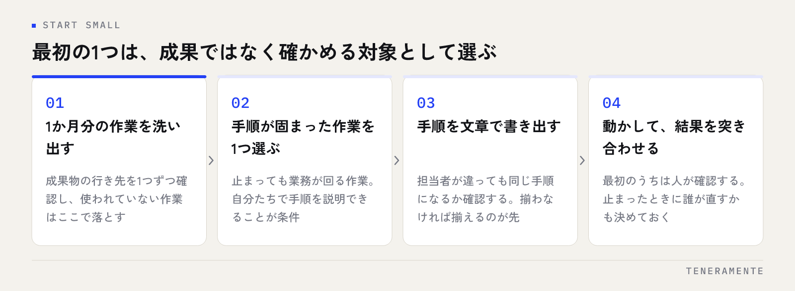

自動化の話になると、RPAとAIが同じ棚に並べて語られがちです。RPAとは、人がパソコン上で繰り返している決まった手順を、そのまま代行させる仕組みです。判断を任せる道具ではありません。ここを分けて考えると、どちらを使うべきかは意外とはっきりします。
📌 この記事の結論
RPAが効くのは、手順が毎回同じで、量がまとまっていて、間違えると困る作業です。逆に、文章を読んで意味を取る・例外を判断する作業はAIの領域。中小企業では「その業務、そもそも要るか」を先に問い、残った定型作業だけをRPAに渡す順番が現実的です。
01RPAとは、パソコン上の決まった手作業を代行する仕組み
RPA（Robotic Process Automation）は、人がマウスとキーボードで行っている操作を記録し、同じ順番で再生するソフトウェアです。画面のこのボタンを押す、この欄に貼り付ける、このファイルを開いて指定の列をコピーする。そうした手順の並びを「ロボット」として登録しておき、時間を決めて動かしたり、手元から実行したりします。
特徴は、既存のシステムを改修せずに使えることです。会計ソフト、販売管理システム、Webの管理画面。連携の仕組みが用意されていなくても、人が触れる画面であれば操作を代行できます。システム同士をつなぐ正規の方法が無いまま、手作業でデータを橋渡ししている場面に入り込める、という位置づけです。
裏を返せば、RPAは画面の見た目に依存します。ボタンの位置が変わる、項目が1つ増える。それだけで動かなくなることがあります。この性質は、後で触れる運用上の注意に直結します。
02中小企業でRPAが向く業務、向かない業務
向くのは、次の3つがそろった作業です。手順が毎回同じであること。まとまった量があること。そして間違えると後工程が困ること。この3つがそろって初めて、作る手間が見合います。
具体的には、複数のシステムから同じデータを拾って1つの表にまとめる作業、決まった書式の帳票を件数分だけ出力する作業、受信したファイルを所定のフォルダに振り分けて台帳に転記する作業などです。いずれも「考える余地が無いのに、人がやらないと進まない」種類の仕事です。
向かないのは、月に数件しか発生しない作業、そのつど判断が入る作業、そして手順がまだ固まっていない作業です。特に3つ目は見落とされがちで、担当者ごとにやり方が違う業務をそのままRPA化すると、誰のやり方を正にするかで止まります。手順を揃える作業のほうが本体になることも珍しくありません。
先に問うべきは「その作業は要るか」
自動化の相談で最も多いのは、実はその作業自体が不要になっているケースです。以前の担当者が始めた集計を、誰も使っていないのに続けている。まずは1か月分の作業を洗い出し、成果物の行き先を1つずつ確認してください。行き先が無い作業をRPA化しても、無駄が速くなるだけです。
03RPAとAIは、得意なことが違う
RPAは「決まった手順を、間違えずに繰り返す」ことが得意です。手順書のとおりに動くので、結果が毎回同じになります。逆に、手順書に書いていない事態には対応できません。
AIは「書いていないことを推測する」ことが得意です。メールの本文から依頼内容を読み取る、書式の違う請求書から金額と日付を拾う、問い合わせの内容を分類する。人が読んで判断していた部分を担えます。一方で、結果が毎回まったく同じになるとは限らず、確認の仕組みが要ります。
この2つは、置き換えの関係ではなく前後に並ぶ関係です。AIがバラバラの形式のデータを読み取って揃え、RPAがそれを決まった場所へ確実に流し込む。実務で使うときは、この組み合わせになる場面が多くなります。AIをどこから業務に入れるかは、AIで業務改善を進める手順にまとめています。
04どちらを選ぶかの判断基準
迷ったときは、その作業に「正解が1つに決まるか」を問うのが分かりやすい基準です。決まるならRPA、決まらないならAI。それでも整理しきれない場合は、次の表を目安にしてください。
| RPA | AI | 業務アプリとして作り直す | |
|---|---|---|---|
| 得意なこと | 決まった手順の反復 | 文章や画像の読み取り・分類 | 業務そのものの流れを変える |
| 向く作業 | 転記・集計・帳票出力 | 要約・仕分け・下書き作成 | 入力から承認までが1本になる業務 |
| 既存システム | 改修せずに使える | 読み取り部分だけ足せる | 置き換えが前提になる |
| 弱いところ | 画面が変わると止まる | 結果のばらつきに確認が要る | 着手までに時間がかかる |
| 向かない場面 | 手順が固まっていない | 誤りが許されない最終判断 | 手順がまだ変わり続ける業務 |
表の3列目を入れているのには理由があります。転記が多い業務は、自動化の対象ではなくそもそもの設計を見直す対象であることが少なくありません。同じデータを2つのシステムに入れているなら、片方をやめる検討が先です。判断の材料は業務アプリの完全ガイドにまとめています。
05RPAを入れる前に決めておく3つのこと
ひとつ目は、止まったときに誰が直すかです。RPAは画面の変化で止まります。その日に気づけるか、直せる人が社内にいるか。ここが決まっていないと、止まったことに気づかないまま手作業に戻り、ロボットだけが残ります。
ふたつ目は、どのIDで動かすかです。担当者個人のアカウントで動かしていると、その人の異動や退職で止まります。誰の権限で、どの端末で動くのかを最初に決めてください。共有のIDを使う場合は、パスワードの管理方法もあわせて決めます。
みっつ目は、作ったロボットを誰が把握するかです。作りやすい道具ほど、担当者がそれぞれ作り始めます。何が、どこで、いつ動いているのか分からないロボットが増えた状態は、後から解きほぐすのに時間がかかります。一覧にして管理する場所を先に用意しておくのが安全です。
「動いているけれど中身が分からない」を避ける
RPAで起きる問題の多くは、性能ではなく引き継ぎで起きます。作った本人しか手順を知らない状態を避けるため、ロボット1つにつき「何をする・いつ動く・止まったら誰に連絡する」の3行だけでも記録に残してください。3行あれば、後任が調べ直す時間が大きく変わります。
06小さく始めるための進め方
最初の1つは、成果を出す対象ではなく確かめる対象として選びます。止まっても業務が回る作業、自分たちで手順を説明できる作業を選んでください。

進め方は次のとおりです。1か月分の作業を洗い出して不要なものを落とし、残ったうち手順が固まっている作業を1つ選ぶ。その手順を文章で書き出し、担当者が違っても同じになるか確認する。そこまで済んでから、作り始めます。動かし始めたら、最初のうちは結果を人が突き合わせて確認します。
この順番を飛ばして、いきなり手順の複雑な業務から入ると、作っている途中で例外が次々に見つかります。業務の流れを図にする方法は業務フロー図の書き方が参考になります。
自動化でいちばん効くのは、速く動かすことではなく、やらない作業を決めることです。
07よくある失敗と、その避け方
例外処理を作り込みすぎるのが1つ目です。全体の一部でしか起きない例外に対応させようとすると、ロボットが複雑になり、直せる人がいなくなります。例外は人に戻す設計にしておくほうが、結果として長く動きます。
効果を測っていないのが2つ目です。導入前に、その作業に月どれくらいの時間を使っているかを記録してください。導入後に比べる基準が無いと、続けるかどうかの判断ができません。
担当者が1人なのが3つ目です。作れる人が1人しかいない状態は、その人の業務が増え続けることを意味します。最初から2人目を巻き込み、作り方より「止まったときの戻し方」を共有しておいてください。
RPAは、プログラミングの知識がなくても使えますか？
RPAとマクロ（VBA）は何が違いますか？
まず何から手をつければよいですか？
08まとめ：手順を揃えることが、自動化の本体
RPAとは、決まった手順を代行する仕組みです。中小企業で効くのは、手順が毎回同じで、量がまとまっていて、間違えると困る作業。判断が必要な部分はAIに任せ、その前後をRPAでつなぐ形が実務的です。そして、どちらを使うにしても、先に問うべきは「その作業は要るか」「手順は揃っているか」の2つです。
自動化の道具は、業務の形が決まって初めて効きます。逆に言えば、手順を揃える作業をやりきれば、RPAを入れなくても解決する業務が一定あります。
TENERAMENTEでは、業務の洗い出しから、自動化するか作り替えるかの切り分けまでを一緒に進めています。どの作業をどの手段に載せるかの整理は業務アプリ開発のページにまとめていますので、自社の業務が自動化に向くかどうかから相談したい場合は、お問い合わせよりお気軽にお声がけください。